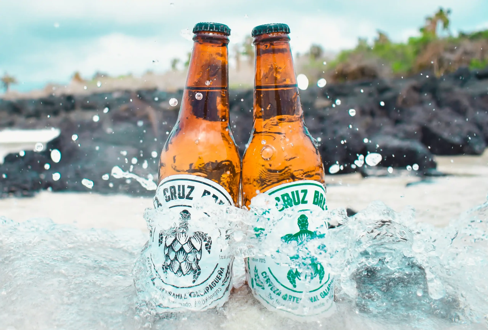

En 2012 elaboramos la primera cerveza en Galápagos como cerveceros caseros (HomeBrewers). Ese año nació nuestro proyecto, impulsados por familiares y amigos que probaron nuestros primeros “experimentos” y nos motivaron a formalizar la idea: crear una cerveza 100% hecha en Galápagos.
Nuestra fábrica de cerveza es más que un negocio; es un sueño compartido por un equipo de entusiastas dedicados a perfeccionar el arte de la cervecería. Cada lote que elaboramos es una expresión de nuestra pasión por la innovación y el respeto por las tradiciones cerveceras.
Desde el año 2022 hemos conseguido un total de 33 medallas cerveceras en competencias nacionales e internacionales, hecho que ratifica la calidad y la innovación de nuestras cervezas.

Los principios que guían cada decisión que tomamos
Solo utilizamos ingredientes premium y procesos rigurosos para garantizar que cada cerveza cumpla con los más altos estándares de excelencia.
Nos comprometemos con prácticas sostenibles que protegen el medio ambiente único de Galápagos, nuestra casa y fuente de inspiración.
Creemos en fortalecer nuestra comunidad local, creando empleos dignos y apoyando a productores locales siempre que es posible.
Constantemente experimentamos con nuevos estilos y sabores, sin perder de vista las técnicas clásicas que hacen grande a la cerveza.
De los ingredientes a tu vaso
Elegimos cuidadosamente cada ingrediente: maltas de primera calidad, lúpulos selectos y levaduras propias.
Los granos se muelen justo antes de la cocción para preservar sus sabores y aromas naturales.
Nuestro maestro cervecero controla cada variable para lograr el equilibrio perfecto de sabores.
La fermentación lenta a temperatura controlada permite desarrollar sabores complejos y auténticos.
Cada botella se llena con el mayor cuidado para preservar la frescura y carbonatación natural.